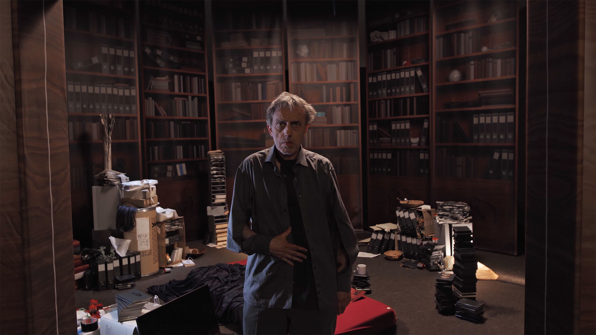
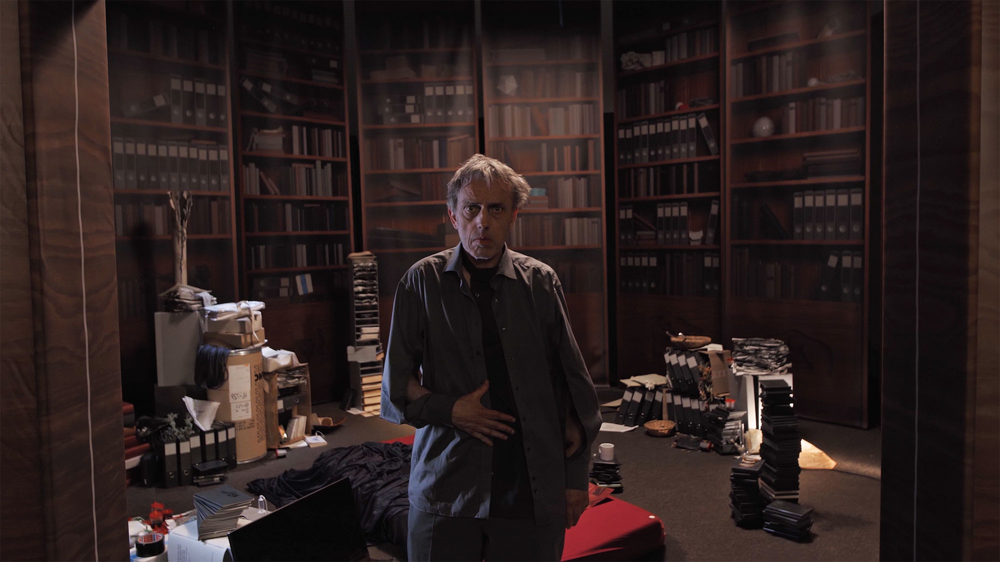

Combining cinematic language with elements of a chamber play, both works Dizzy and Nassauer
present as explorations of the Subject and its topology as a site of intrusion, disorientation and decay.
Beide Werke, Dizzy und Nassauer, verbinden Kinosprache mit Elementen eines Kammerspiels und
präsentieren sich als Erkundungen des Subjekts und dessen Topologie als Ort des Einbruchs, der
Desorientierung und des Verfalls.
Starring Shade Théret
Written and directed by Juliet Carpenter
Producer: Henry Davidson
Director of Photography: Joey Bania
1st Assistant Camera: Cormac Dunne
2nd Assistant Camera: Nina Nadig
Production Designer: Matthew Bianchi
Sound Designer: Maily Beyrens
Lighting Designer: Robert Sampławski
Costume Designer: Luka Mues
Hair and Make Up Artist: Lillian Schumacher
Sound Recordist: Nina Nadig
Production Assistant: Gabrielle Cox
Written, Directed and Edited by Louis Hay
DoP: Moritz Freudenberg
Subject: Viktor Schachermayer
Production Design with Leander Kreissl
Casting and Costume: Ines Dautel
CGI and Scenery: Peter Cornicius & Thomas Spieler
Gaffer and Focus Puller: Ferdinand Klotzky
Make Up: Licia Flocke
Production Assistants: Heman Singh, Lisa Strozyk
Sound Design: Sam Conran
Set Photography: David Rank, Eunjung Hwang
Set Installation Support: Leon Habig, Moana List, Serafin Schweinitz
Supported by Kulturstiftung des Freistaates Sachsen